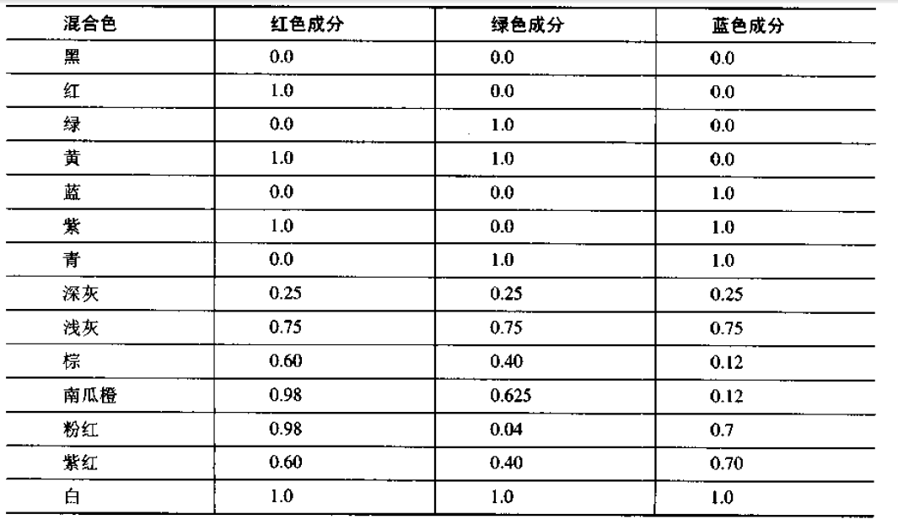

|
OpenGL
OpenGL 環境配置win32 OpenGL 一般已經被包含在 支持OpenGL的環境中 無需配置 然 GLUT 工具包需要 自行配置 GLUT 是一個 為示例程序 提供 簡易的 交互接口 提供了基本的 窗口管理 io 接口 從 官網 下載 GLUT 壓縮包 glutdlls37beta.zip 並解壓 http://www.opengl.org/resources/libraries/glut/glutdlls37beta.zip 將 dll 加入 執行路徑 將 lib 加入 鏈接庫目錄 將 *.h 加入 include目錄 注意 GLUT 是可選工具包 可以不用安裝 只建議使用 GLUT 創建 示例程序 更複雜的功能 應該使用 平台API 或其他接口 hellow word #include<glut.h>
void render_scene()
{
//清除緩衝區 圖像
glClear(GL_COLOR_BUFFER_BIT);
glFlush();
}
int _tmain(int argc, _TCHAR* argv[])
{
//設置 窗口顯示 模式 GLUT_SINGLE(單緩衝) GLUT_RGB(RGB顏色模式)
glutInitDisplayMode(GLUT_RGB | GLUT_SINGLE);
//創建 窗口
glutCreateWindow("hellow word");
//設置顯示回調函數
glutDisplayFunc(render_scene);
//初始化 OpenGL 顏色分量取值 [0.0 1.0]
glClearColor(0.0f,0.0f,0.0f,1.0f); //設置背景清除顏色
//...其他初始化操作
//運行 glut 框架 直到結束程序
glutMainLoop();
return 0;
}

注意 一般 還應該 #include<gl\GL.h> #include<gl\GLU.h> 然其已經被 include 在 glut.h 中 |